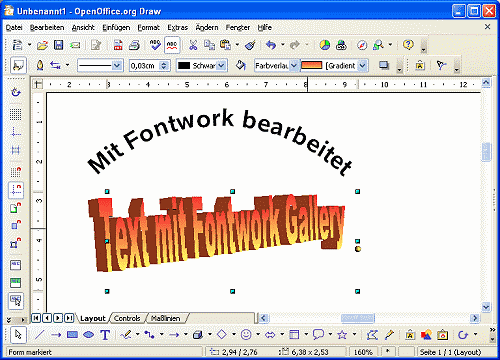
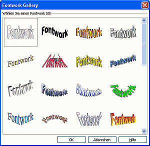

| [zurück] | [Hauptmenü] | [weiter] |
Fontwork und Fontwork Gallery
 Abbildung 1: Fontwork und Fontwork Gallery
Sie können in Draw verschiedene, kreative Texteffekte erzeugen oder vorformatierte Textobjekte aus der Fontwork Gallery verwenden. Dabei handelt es sich um 2 verschiedene Arten von Erstellung und/oder Bearbeitung.
Text mit Fontwork bearbeiten
Um Text mit Fontwork zu bearbeiten, müssen Sie Fontwork in eine Symbolleiste einbauen. Als Beispiel soll die Symbolleiste "Text Format" dafür verwendet werden.
- Blenden Sie die Symbolleiste "Text Format" ein. Menü Ansicht > Symbolleisten > "Text Format"
- Klicken Sie auf der eingeblendeten Symbolleiste den kleinen Pfeil an der rechten Seite an und wählen "Symbolleiste anpassen..."
- Klicken Sie auf den Button Hinzufügen und wählen bei Bereich den Bereich "Format" und bei Befehle den Befehl "Fontwork" aus. Klicken Sich auf den Button Hinzufügen und Schließen
- Verschieben Sie das hinzugefügte Symbol mit den Hoch-/Herunterpfeilen an einen passenden Ort und klicken Sie auf OK.
Wenn Sie nun das Text-Werkzeug  in der Symbolleiste Zeichnen anklicken, blendet sich die Symbolleiste "Text Format" automatisch ein, mit dem neuen Symbol Fontwork
in der Symbolleiste Zeichnen anklicken, blendet sich die Symbolleiste "Text Format" automatisch ein, mit dem neuen Symbol Fontwork
Mit Fontwork formatieren
- Erstellen Sie nun einen Text in Draw
- Klicken Sie hierfür in der Symbolleiste Zeichnen auf das Textwerkzeug
- Wählen Sie gewünschte Schriftart, -größe und -attribut aus
- Geben Sie einen Text ein
- Klicken Sie in der Symbolleiste "Text Format" auf Fontwork
Nun öffnet sich das Fontwork-Dialogfenster mit den verschieden Formatierungsmöglichkeiten für den Text.
 Abbildung 2: Der Fontwork Dialog
Abbildung 2: Der Fontwork Dialog
Im oberen Bereich des Dialogs können Sie die Form des Textverlaufes auswählen.
Darunter die Stellung auf der Grundlinie, darunter die Ausrichtung, darunter der Abstand zur Grundlinie, bzw. zum linken Rand.
Danach folgen Effekte. Wenn Sie die Maus über den einzelnen Einstellmöglichkeiten plazieren, erhalten Sie einen Tooltipp zur Funktion. Lernen Sie die Möglichkeiten kennen, indem Sie mit den Funktionen etwas experimentieren.
Selbstverständlich bleibt der Text editierbar. Sie können die Größe des Textobjektes auch an den Anfassern verändern. Dabei werden Biegung und Schrift angepasst.
Effekttext mit Font Gallery erstellen
Noch effektvollere Texte erstellen Sie mit der Font Gallery.
 Abbildung 3: Die Fontwork Gallery- Klicken Sie in der Symbolleiste Zeichnen auf das Symbol Font Gallery
- Ein Dialogfenster mit verschieden formatierten Fonteffekten öffnet sich
- Wählen Sie eines aus und klicken auf OK
- Das Objekt wird erstellt und der Dialog geschlossen.
Zum Bearbeiten und Formatieren des Textes doppelklicken Sie auf das Textobjekt.
Es stehen folgende weitere Möglichkeiten der Bearbeitung zur Verfügung:
- Höhe und Breite verändern Sie an den Anfasspunkten
- Bei perspektivische Veränderungen anhand dem gelben Anfasspunkt (nur bei gewähltem perspektivem Text)
- Änderung der Umrisslinie
- Änderung der Füllung (Vollfarbe, Farbverläufe, Texturen)
Auch hier gilt: Lernen Sie die vielfältigen Möglichkeiten der Darstellung kennen, indem Sie mit den vorgestellten Möglichkeiten experimentieren.